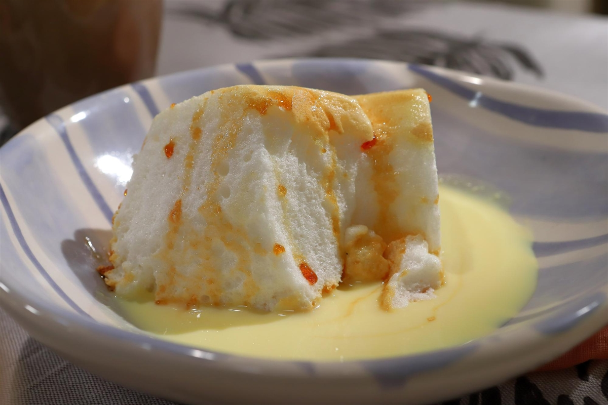

Tiramisu

Ingredientes
- 500 g. de queso-crema Mascarpone
- 6 huevos M (de los que empleamos 6 yemas para el sabayón y 4 claras para montar)
- 150 g. de azúcar glass en polvo (recomendable) o azúcar normal blanquilla
- 300 g. de bizcochos savoiardi o de soletilla
- 4 cucharadas de Amaretto o el licor que nos guste
- 10 a 20 g. de cacao puro en polvo (depende de donde lo hagamos más o menos cacao)
- 150 ml. de café fuerte (el que más nos guste)
- 1 pellizco de sal para montar las claras
Paso a seguir
- Crema Sambayon
- Calentamos agua en una cazuela grande, debe estar caliente pero sin llegar a hervir. Mientras se calienta el agua vamos separando las yemas de las claras y apartamos en una taza. Las claras las vamos a montar posteriormente, reservamos.
- Los huevos deben ser frescos y hay que manipularlos a temperatura ambiente. Mezclamos el azúcar, en un cuenco metálico, con todas las yemas. Empezamos batiendo en el cuenco fuera del agua y cuando comience a espumar introducimos el cuenco en la cazuela con el agua caliente.
- Una vez dentro batimos con unas varillas manualmente o con las de la batidora hasta que las yemas doblen de tamaño. Vamos añadiendo poco a poco las cuatro cucharadas de amaretto y mezclando de manera envolvente hasta que estén incorporadas a la crema. Después de mezclar todo sacamos del baño maría y seguimos en frío hasta que nos quede una crema esponjosa y compacta. Reservamos para el montaje del tiramisú.
- Preparación del tiramisú casero
- Montamos las claras a punto de nieve. Para ello introducimos las claras, a temperatura ambiente, en un bol en el que no haya ningún resto de grasa o no subirán. Les añadimos un pellizco de sal y empezamos a batir. Batimos hasta que las claras suban y queden firmes. Luego manejamos el merengue con una espátula de silicona.
- Añadimos la crema sabayón que tenemos reservada a las claras montadas. Mezclamos de manera envolvente y con cuidado hasta que quede todo integrado e intentando que bajen lo mínimo posible.
- Batimos el queso mascarpone hasta que quede cremoso (lo mejor es batirlo a temperatura ambiente). Mezclamos este queso batido con la crema anterior suavemente, intentando que no se baje la crema para mantenerla esponjosa. Reservamos.
- Ponemos una cafetera con un buen café, el que más nos guste. Una vez preparado lo dejaremos enfriar.
- Presentación final del tiramisú
- En el molde elegido, ponemos una capa de bizcochos de soletilla. Regamos con el café para empapar los bizcochos. No debemos mojarlos demasiado, lo justo para asustarlos, no deben romperse.
- Cubrimos con una capa de crema de queso y huevo y repetimos la operación hasta tener una o dos capas más, bizcochos mojados y capa de crema. El último paso es el del toque del cacao, imprescindible que sea cacao de calidad y amargo. Este ingrediente es el que da ese contraste tan importante en este postre
- Lo espolvoreamos sobre el postre con un colador para que no queden grumillos. Yo suelo dejar este paso para el final de todo. Justo antes de presentarlo a los invitados, porque al enfriar el cacao tiene peor presentación. Y lo fundamental, metedlo a la nevera para que enfríe. Yo lo dejo siempre de un día para otro.
Isla Flotante

Ingredientes
- Azúcar impalpable 180 grs
- Esencia de vainilla c/n
- Claras 6 Unidades
- CREMA INGLESA
- Yemas 6 Unidades
- Esencia de vainilla c/n
- Leche 500 cc
- Azúcar 60 grs
Paso a seguir
- ISLA FLOTANTE
- Agregar azúcar en sartén y a fuego medio dejar que se haga caramelo sin revolver.
- Forrar el molde elegido con el caramelo dorado (base y paredes) y reservar.
- Batir las claras a nieve y cuando empiezan a espumar incorporar el azúcar en forma de lluvia y continuar batiendo hasta que estén firmes.
- Agregar las claras a nieve en el molde acaramelado y cocinar en horno a 160 °C baño maría por 60 minutos.
- CREMA INGLESA
- Calentar la leche.
- Mezclar en un bol las yemas, el azúcar y la esencia de vainilla.
- Agregar ¼ de la leche caliente lentamente y sin parar de revolver con un batidor de alambre.
- Verter la mezcla en la cacerola con la leche y volver a un fuego bajo, revolviendo constantemente con una cuchara de madera hasta que la mezcla espese.
- Retirar del fuego y cubrir con film en contacto hasta enfriar.
- ARMADO
- Servir un poco de la crema inglesa en un plato hondo y por encima la isla flotante.